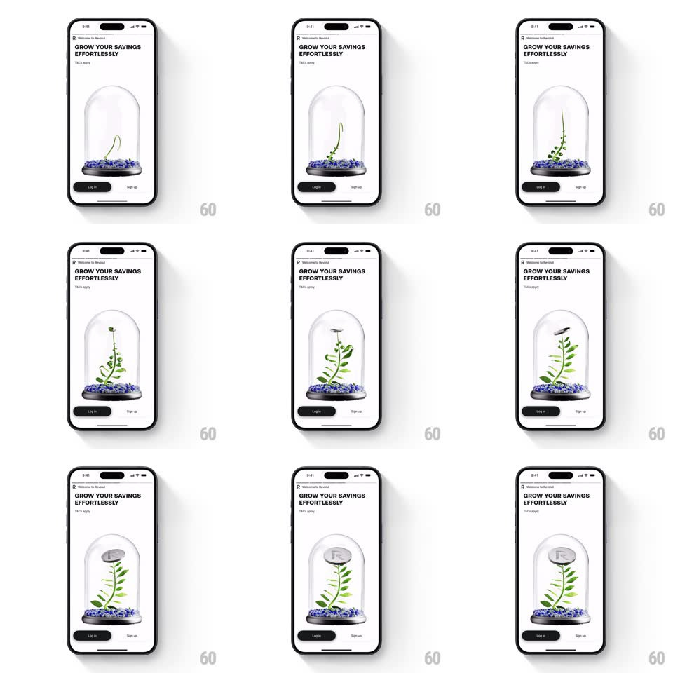

Media
Frame-by-frame

Rebuild this interaction 1:1: Revolut's grow savings loop - under "GROW YOUR SAVINGS EFFORTLESSLY", a plant grows leaf by leaf inside a glass dome on a pebble base, then catches a silver coin that falls from above, and the loop resets.

Rebuild this interaction 1:1: Revolut's grow savings loop - under "GROW YOUR SAVINGS EFFORTLESSLY", a plant grows leaf by leaf inside a glass dome on a pebble base, then catches a silver coin that falls from above, and the loop resets. ## Integration Integration: stack-agnostic spec - springs given as stiffness/damping, timed motions as duration + curve; map every value to your framework and animation library of choice. ## Scene A white screen: "Welcome to Revolut" eyebrow, bold headline "GROW YOUR SAVINGS EFFORTLESSLY" with "T&Cs apply", then the hero - a glass cloche dome on a dark base filled with blue-grey pebbles - and "Log in" / "Sign up" pills below. ## Motion spec Pattern: staged growth loop with a coin payoff. - Stage 1 (0-2.5s): a bare sprout grows from the pebbles - the stem extends upward with a slight natural curl (growth is a draw-on: stem length animates, ease-out) while small leaf pairs unfurl at intervals (each leaf scales from 0 with a soft spring, 300ms, staggered 250ms apart). - Stage 2 (2.5-3.5s): the plant reaches full height and gently sways (rotate +/-2deg, 2s loop) - glass reflections stay fixed as the plant moves. - Stage 3: a silver coin drops from the top of the dome (falls with gravity, slight tumble, 500ms) and lands on the plant's top (small impact dip, spring ~500/18, 200ms); the coin rests there, slowly rotating. - Stage 4: a brief hold (800ms), then everything fades/resets to the bare dome and the loop restarts. ## Calibration - Growth is the slow part (~2.5s), the coin drop is the fast beat - contrast sells the moment. - The dome is real glass - faint refraction and a specular streak that never moves. ## Reduced motion Crossfade between sprout, grown plant, and plant-with-coin states. ## Don't miss - The pebbles shift almost imperceptibly as the sprout pushes through. - The coin bounces once, tiny, before settling on the leaves.